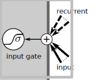

Lecture notes of 301 Lecture 11
Introdction
- RNN were introduced in the late 80’s
- Hochreiter discovers the ‘vanishing gradients’ problem in 1991
- Long Short Term Memory published in 1997
- LSTM: a recurrent network to overcome this problem.
Motivation
- Feed forward networks
- accept a fixed-sized vector as input
- produce a fixed-sized vector as output
- usually fixed amount of computational steps
- Recurrent networks allow us to operate over sequences of vectors
- the idea behind RNNs is to make use of sequential information, as in a traditional neural network all inputs (and outputs) are assumed independent of each other
- but for many tasks that’s a very bad idea: if you want to predict the next word in a sentence you better know which words came before it.
RNN Architecture
RNNs are called recurrent because they perform the same task for every element of a sequence, with the output being depended on the previous computations (memory).
- inputs x(t)
- outputs y(t)
- hidden statee s(t): memory of the network
- a delay unit is introduced to hold activation until they are processed at the next step.
The decision a recurrent net reached at time step t-1 affects the decision it will reach one moment later at time step t
- two sources of input: the present and the recent past, which combine to determine how they respond to new data
- two sources of input: the present and the recent past, which combine to determine how they respond to new data
RNN topologies range from partly recurrent to fully recurrent
- partly recurrent is a layered network with distinct input and output layers where the recurrence is limited to the hidden layer
- in fully recurrent networks each node gets inputs from all other nodes
The recurrent network can be converted into a feed forward network by unfolding over time
This means all the earlier theory about feed forward networks learning follows through
In RNN errors can be propagated more than 2 layers in order to capture longer history information.
The above diagram has outpus at each time step, but depending on the task this may not be necesary.
Back Propagation Through Time (BPTT)
- BPTT learning algorithm is an extension of standard backpropagation that performs gradients descent on an unfolded network.
- The gradient descent weight updates have contributions from each time step.
- The errors have to be back-propagated through time as well as through the network
- For recurrent networks, the loss function depends on the activation of the hidden layer through its influence on the output layer and through its influence on the hidden layer at the next step.
Vanishing Gradients
LSTM introduction
- LSTM was invented to solve the vanishing gradients problem
- LSTM maintain a more constant error flow in the back propagation process
- LSTM can handle large sequences that are linked remotely.
- LSTM has the same idea as RNN
LSTM Architecture
- The basic unit in the hidden layer of a LSTM network is a memory block, it replaces the hidden unit in a traditional RNN.
- A memory block contains one or more memory cell and a pair of adaptive multiplicative gating units which gates input and output to all cells in the block
- Memory blocks allow cells to share the same gates thus reducing the number of parameters.
LSTM Architecture
overview
Input
- The input layer decides which information from the input should be forwarded into the LSTM cell.
- By multiplying y(t-1) with the recurrent weight matrix Rz, the layer decides which inofrmation from the previous time step should be forwarded into the LSTM cell
Input gate

- The input gate controls write accessed to memory cells.
- This is realized by using the result of the squashing function σ as a factor which will be later multiplied by the squashed cell input z(t).
- The range of function σ is (0,1) and can be interpreted in case of 0 as write access denied and in case of 1 as write access granted.
- Note that all values in between are also possible.
CEC
- Each memory cell contains a node with a self-connected recurrent edge of fixed weight one ensuring that the gradient can pass across many time steps without vanishing - which is called CEC (constant error carousel)
- The CEC solves the vanishing error problem. In the absence of new input or error signals to the cell the CEC local error back flow remains constant, neither growing or decaying.

Output gate
- The output gate controls read accessed from memory cells.
- This is realized by using the result of the squashing function σ as a factor which will be later multiplied by the squashed cell content h(c(t)).
- The range of function σ is (0,1) and can be interpreted in case of 0 as read access denied and in case of 1 as read access granted.
- Note that all values in between are also possible.
Output
- The value stored in the cell c(t) is squashed by function h, and whether this information gets output is decided by the output gate via o(t).
LSTM Forward Pass
- The cell state c is updated based on its current state and 3 inputs: a(z), a(in), a(out)
LSTM Backward Pass
- Errors arriving at cell outputs are propagated to the CEC
- Errors can stay for a long time inside the CEC
- This ensures non-decaying error
- can bridge time lags between input events and target signals
Advantages of LSTM
- Non-decaying error backpropagration.
- For long time lag problesm, LSTM can handle noise and continuous values.
- No parameter fine tuning
- Memory for long time periods
Limitations of LSTM
- LSTM allows information to be stored across arbitrary time lags and error signals to be carried far back in time.
- This potential strength however, can contribute to a weakness: the cells state c(t) often tend to grow linearly during the presentation of a time series.
- If we present a continueous input stream, the cell state may grow in unbounded fashion causing saturation of the output squashing function g(c(t)).
Conclusions
- RNNs - self connected networks
- Vanishing gradients and long memory problems
- LSTM - solves the vanishing gradients and the long memory limitation problem.